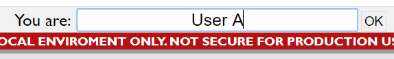
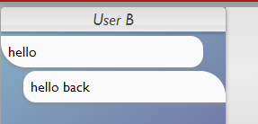
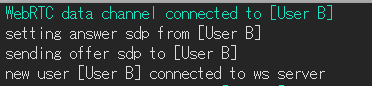

WebRTC fullmesh learning system
警告
このシステムは学習目的で制作されたものであり、ローカル環境のみを想定しています。インターネット上の製品としての使用は安全ではありません。製品としての使用はしないで下さい。
このシステムについて
WebRTC APIは、複数のエンドポイント間のリアルタイム通信を行うにあたり有用です。 しかし、ブラウザ側でのWebRTC APIは複数のイベント処理に対処する必要があり、とりわけ複数のエンドポイント間の接続においては理解や実装が難しくなります。このシステムは、これらのイベント処理をログによって可視化することで、理解を補助することを目的としています。
動作環境
このシステムは、Docker,ウェブブラウザ,インターネット接続環境(準備用)を動作環境として必要とします。
開発用のツールは以下の通りです:
OS
Windows 10
Docker
19.03.5
docker-compose
1.24.1
また、動作はDebian10,Chromium,Node.js v10のスタックでも確認しています。
動作上のもんだはOS,ウェブブラウザ、Dockerのバージョンが古いことに起因している可能性があります。うまくいかない場合はこれらをアップデートしてください。
準備
このリポジトリをクローンしたディレクトリをターミナル(もしくはコマンドプロンプト)で開いているとします。
-
dockerをインストールします
(Windowsを使用している場合は、リポジトリのあるドライブがdockerによって共有されていることを確認してください。 無効にされている場合は有効にしてください。)
-
次のコマンドでdockerのイメージを作成します:
docker-compose -f docker-compose.run.yml build --no-cache
Windowsの場合は次のコードで代替できます:
prepare
動作させる
リポジトリのディレクトリをターミナル(あるいはコマンドプロンプト)で開いているものとします。
-
次のコードを実行します:
docker-compose -f docker-compose.run.yml run
Windowsの場合は次のコードで代替できます:
run
-
ブラウザ(Chrome)の複数のウィンドウを開いて、それぞれのウィンドウでで次のurlにアクセスします:
localhost:8080
-
名前を入力してOKを押します。このプロセスでそれぞれのウィンドウが接続されます。

-
メッセージが届いているかをメッセージで確認します。

-
ログとコードを読む準備ができました。

より詳しく調べる
-
WebRTC API
-
サンプル